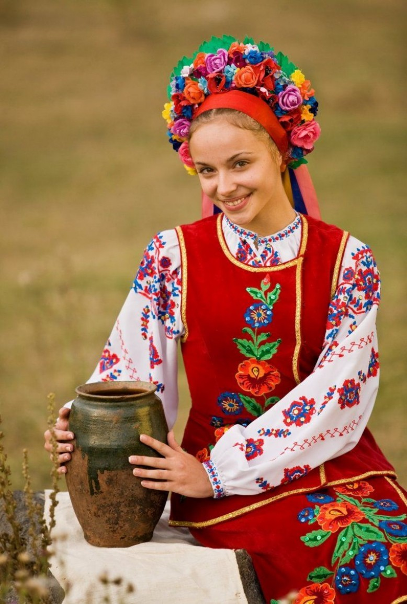

Україна

У самому серці Європи знаходиться прекрасна країна Україна. Вона з'єднує Схід і Захід, як міст, і відіграє важливу роль у житті обох. Україна має глибоке історичне багатогранне минуле, багату культуру та традиції.
RANDOM TEXT
Україна - це країна з чудовою природою і рідкісним колоритом традицій, країна лікувального м'якого мікроклімату, самобутнього народного мистецтва і глибокої слов'янської культури.
Багата історико-культурна спадщина, озера, річки, ліси з лісовими ягодами та грибами, лікувальні торф'яні грязі, мінеральні води, риболовля... все це створює необхідні передумови для організації та функціонування культурно-пізнавального, оздоровчого, спортивного, сільського та інших видів туризму!
Україна є досить популярним туристичним напрямком як серед місцевих жителів, так і серед жителів сусідніх країн. Пляжний та оздоровчий відпочинок на узбережжі Чорного та Азовського морів, екологічний та гірськолижний відпочинок в Карпатах, багата історична спадщина роблять подорожі до України незабутніми та дивовижними.
Завдяки численним мінеральним джерелам можливі оздоровчі тури до бальнеологічних курортів Моршина, Трускавець та Свалява. Останнім часом, завдяки активному розвитку туристичної сфери - оновленню готельної бази, будівництву нових готелів та благоустрою курортних зон, потік гостей в Україну поступово збільшується, роблячи подорожі нашою країною все більш комфортними та привабливими.
-
text...
- text...
-
text...
- text...
- text...
- text...
- text...
- text...
- text...
- text...
Клімат
Віддаленість Українивід океанів, континентальність Євразії та переважно рівнинний рельєф визначають клімат країни як помірно-континентальний, що поступово змінюється із заходу на схід. Зі збільшенням континентальності літо стає спекотнішим, зима холоднішою, а кількість опадів меншою. Такі комфортні кліматичні умови дають людям можливість насолоджуватися пляжним відпочинком на Чорному морі влітку і кататися на лижах на гірськолижних курортах засніжених Карпат взимку.
Найнижчі середні температури припадають на січень - лютий: -7, -8°C на північному сході країни і в гірських районах. У березні спостерігається підвищення температури повітря. Найвищі середньодобові температури зафіксовані в липні: +20, +25°С, а середньомісячні - +17, +19°С на півночі та північному заході, +22, +30°С на півдні України. Розподіл опадів на території України має тенденцію до зменшення з півночі та північного заходу на південь та південний схід.

Населення
Станом на 1 лютого 2015 року, за даними Держстату, чисельність населення України становила 42 741 248 осіб постійного населення та 42 910 885 осіб наявного населення.
На сьогодні більшість населення країни становлять українці. Другою за чисельністю нацією є росіяни (їхня частка перевищує 17,28% населення). Відносно великими етнічними групами населення України є білоруси (0,57%), молдавани (0,54%), кримські татари (0,51%), болгари (0,42%), угорці (0,32%), румуни (0,31%), поляки (0,30%) та інші. Середня очікувана тривалість життя для чоловіків становить - 65 років, для жінок - 74 роки.
Релігія
Основною релігією в Україні є християнство. Більшість віруючих - християни, більшість з яких належать до православних церков. Католицька церква представлена Українською греко-католицькою церквою і в основному поширена в Галичині (Тернопільська, Львівська та Івано-Франківська області). Крім того, в Україні існують протестантизм, іудаїзм та іслам.
Часовий пояс
Час в Україні визначається як UTC+02:00, а влітку як UTC+03:00. Місцевий час називається київським і є частиною східноєвропейського часу. Перехід на літній час відбувається в останній тиждень березня о 03:00, коли час переводиться на годину вперед, і в останній тиждень жовтня о 04:00, коли час переводиться на годину назад; таким чином, годинник в Україні завжди на 1 годину випереджає годинник у Центральній Європі.
Майже 95% території України знаходиться у східноєвропейському часовому поясі, за винятком її західної та східної околиць. Невелика частина Закарпатської області розташована в центральноєвропейському часовому поясі, тоді як Луганська область, більша частина Донецької області та частина Харківської області географічно розташовані в далекосхідному часовому поясі. Проте вся країна офіційно дотримується східноєвропейського часу.
Щорічно в Україні вводиться літній час: в ніч на останню неділю березня годинникову стрілку переводять на одну годину вперед. Це дає можливість повніше використовувати світлу частину доби та економити електроенергію. У ніч на останню неділю жовтня стрілки годинника повертають на годину назад, відновлюючи часовий пояс.
Транспорт
В Україні розвинені майже всі види сучасного транспорту: залізничний, автомобільний, морський, річковий, повітряний.
Залізнична мережа країни поділяється на шість доріг (напрямків): Донецька, Львівська, Одеська, Південна, Південно-Західна та Придніпровська. Максимальна швидкість пасажирських поїздів - 160 км/год. Загальна довжина колій становить 22473 км.
З України можна легко дістатися практично до будь-якої країни Центральної та Західної Європи, а через територію Білорусі - до країн Балтії.
Автомобільний транспорт значно переважає над іншими видами. Через Україну проходять 23 міжнародні дороги. Загальна протяжність автомобільних доріг становить 169 491 км. Основні автомагістралі країни: Київ - Львів, Київ - Харків, Київ - Брест, Дніпро - Нікополь, Київ - Одеса, Одеса - Миколаїв, Херсон, Біла Церква - Вінниця, Хмельницький, Дніпро - Запоріжжя.
Найбільша річка України - Дніпро - судноплавна. Україна має вихід до двох морів - Азовського та Чорного. Морський транспорт здійснює перевезення вантажів і пасажирів у Чорноморсько-Азовському басейні.
Вітряний транспорт також розвинений, в Україні налічується понад 20 аеропортів. Деякі міста України (Київ, Одеса, Львів, Харків) мають по два аеропорти. Головними повітряними воротами країни є аеропорт "Бориспіль".

Висновок
Україна - це країна з багатою історією, культурою та традиціями. Її природа, клімат, населення, релігія, часовий пояс та транспорт створюють необхідні передумови для організації та функціонування різних видів туризму. Україна є популярним туристичним напрямком як серед місцевих жителів, так і серед жителів сусідніх країн. Пляжний та оздоровчий відпочинок на узбережжі Чорного та Азовського морів, екологічний та гірськолижний відпочинок в Карпатах, багата історична спадщина роблять подорожі до України незабутніми та дивовижними.